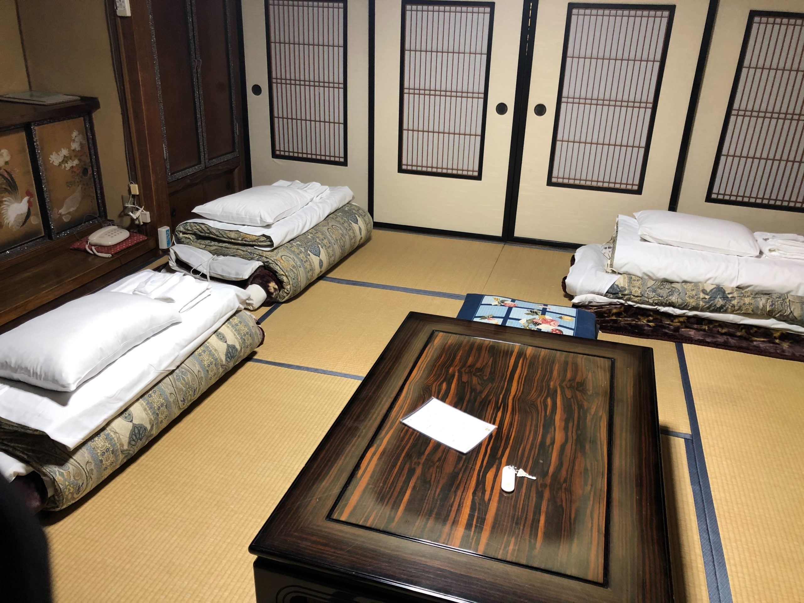

こんにちは、一部広報局長の齋藤です。春休みに入り、普通AT車の免許が欲しくなったので友人と4人で山形県米沢の合宿免許に行ってきました。費用は約30万円程度でした…。この記事では、私が体験した16日間の合宿生活の体験談や感想を記したいと思います。
自己紹介
【所属局】 広報局
【役職】 第九回広報局長
【性別】 男
【所属学科】 ロボットメカトロニクス科
【一言】 緊張症（本番に弱い．．．）
入校
自動車教習所に着いた後、手続きや適性検査を行いました。（適性検査では、視力が0.7以上ないと教習を受けられないとのことだったので少し焦りました笑）
教習は、学科教習（座学）と技能教習（実際に車を運転する）の2つに分かれていて、初日から技能教習が入っていることに驚きました。（案の定、車のハンドリングが分からず上手く運転できませんでした．．．汗）
宿泊
初日の教習を終えて、宿泊先へ．．．．！
{kind=link}
宿泊先はこんな感じでした。↑（後に有形文化財だと知り、ビビりました(;’∀’)）
2日目には米沢牛ステーキを食べました。（これまで食べたことのない柔らかさ、やはり一味違う味わいでした．．．笑）
スーパーやコンビニ、飲食店も多くとても居心地の良い町だったと思います。
一日の流れ
{kind=link}
【 8 : 00 】 朝食
起床後、朝食を食べてバスで教習所に向かいます。
【 10 : 00 ~ 11 : 00 】 学科教習
学科教習に入ります。主に座学ですね、標識、道路交通のルールなど様々なことを勉強します。
【 12 : 00 ~ 13 : 00 】 昼食
1時間、教習所近くの食堂で昼食と休憩に入ります。
【 16 : 00 】 技能教習
技能教習に入ります。実際に運転をして、運転のテクニックや運転の際の合図や交通の状況を学んでいきます。
【 17 : 30 】 帰宿
バスで宿舎に帰ります、その後は寝るまで自由時間です。やっとゆっくりできますね！
これはあくまでも一例ですが、こんな感じでした。中には午前または午後しか教習が入っていない日があり、ゆっくりできる日もありました。学科教習は同時期に入校した教習生と合同、技能は個人で時間割や指導員が割り振られていました。なので、行き帰りのバスは友人と一緒に乗れる機会が多くはなかったと思います。
仮免
合宿免許の生活に慣れ始めた頃、ついに中間地点の仮免試験の日がやってきました。S字やクランクなどの関門はあったものの結果は上々でした。技能試験の結果発表の時は、4人のうち一人でも落ちたらその時点で一人延泊．．．という状況だったので正直ドキドキしましたね汗。仮免学科試験は対策を積めば大丈夫！という感じでした。とはいえ、勉強していなかったら絶対に解けません！私も効果測定（模擬試験みたいなもの）では30点代がザラでした．．．笑
仮免を終えて・・・
仮免後は早速路上教習に入りました。場内ではなかった周りの交通状況を確認して走ることが少し難しいなと感じました。また、様々なシチュエーションいから危険予測をするシミュレータの講習を終えて、自動車がいかに危険なものであるかを再認識することができました。
ついに卒検
時は流れ、卒検の日がやってきました。緊張はしましたが、16日目となると車を運転することにも慣れ、今まで学んできたことを踏まえれば問題はないなと感じました。長いようで短かった合宿生活も終わり、満足して東京に帰ることができました笑
【番外編】私の一年前期の時間割
ここで私が１年生の時に履修した科目についてご紹介したいと思います。
新入生のみなさんは是非参考にしてみてくださいね。
（※未来科学部ロボットメカトロニクス科の場合）
{kind=link}
※ 黄色は必修科目です。
まとめ
時は流れ、卒検の日がやってきました。緊張はしましたが、16日目となると車を運転することにも慣れ、今まで学んできたことを踏まえれば問題はないなと感じました。長いようで短かった合宿生活も終わり、満足して東京に帰ることができました笑
さて、最後に私が考えた合宿と通いの特徴について説明したいと思います。
【合宿】
・短期間で取れる。
・複数人で来ると延泊を恐れる←私の場合だけですが笑
・同期入校の人と授業や同乗教習を行うので友達ができやすい。
【通い】
・延泊などの恐れがないためマイペースに教習を受けられる。
・家から通える。
というような感じです。※あくまで私個人の感想ですが
合宿ならではのストレスもありましたが、個人的にはやはり、合宿でササッと取ってしまうのがおすすめです！大学生協さんから申し込めるので長期休みに行ってみてはいかがでしょうか。拙い文章でしたが、お付き合いありがとうございました！